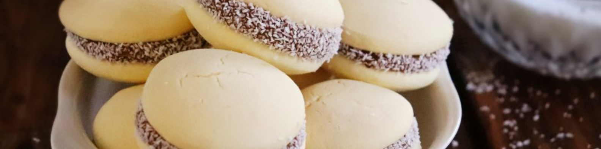

Alfajores de Maicena

Bren Hoffmann 26/10/23
Los alfajores en Argentina son un ícono de las golosinas, existen de todos los sabores y todas las manera imaginables (chocolate, con fruta, mousse, glaseado, etc) pero hay uno que es el más tradicional de todos… el “Alfajor de Maicena”!!
Seguir leyendo
Pan de Hamburguesa

Bren Hoffmann 26/10/23
Siempre decimos que hacer tu propio pan en casa es algo que se vuelve cotidiano desde el momento que lográs un resultado delicioso, ahorrando y comiendo mejor con los ingredientes justos.
Con este Pan de Hamburguesa Casero pasa lo mismo, es un pan que se disfruta muchísimo, un pan esponjoso con buen sabor y no dudarías en hacerte un sandwich a penas sale del horno.
Seguir leyendo